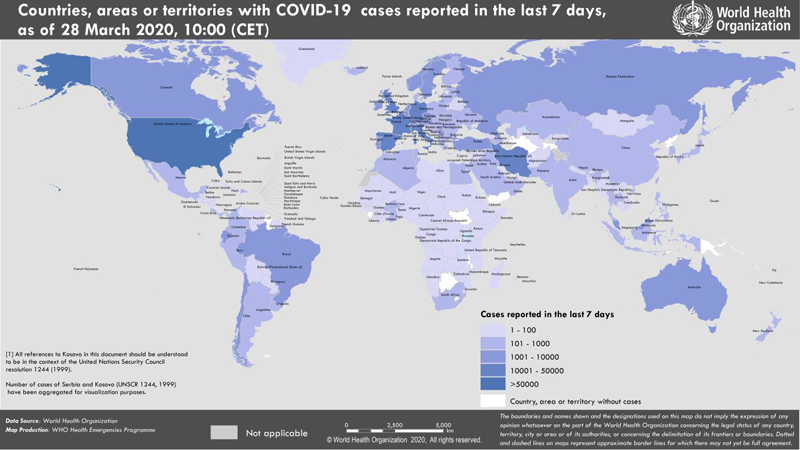

Текущая ситуация с коронавирусом Covid-19: информация ВОЗ от 28.03.2020
Date: 2020-03-29 08:41:35
Topic: Инфекционные заболевания, клиника, диагностика и лечение
На сайте ВОЗ размещены данные на 28.03.2020 о распространении в мире инфекции, вызванной коронавирусом Covid-19 (SARS-CoV-2). Всего в мире на 28.03.2020 зарегистрировано 571678 подтверждённых случаев заболевания.
На сайте ВОЗ размещены данные на 28.03.2020 о распространении в мире инфекции, вызванной коронавирусом Covid-19 (SARS-CoV-2).
- Всего в мире зарегистрировано 571678 подтверждённых случаев заболевания коронавирусом Covid-19.
- Из подтверждённых зарегистрированных случаев 82230 были зарегистрированы в Китае.
- Зарегистрировано 26494 летальных исходов (всего в мире), из них 9136 — в Италии, 4858 — в Испании, 3301 — в Китае, 2378 — в Иране, 1992 — во Франции, 1243 — в США.
- 489448 подтверждённых случаев заболевания были зарегистрированы за пределами Китая, в том числе 1264 в России, 311 в Украине, 204 в Казахстане, 94 в Республике Беларусь (рис. 1).
- Неблагоприятная ситуация по коронавирусу складывается в Италии, где уже зарегистрировано 86498 случаев заболевания, в США (85228), в Испании (64059), в Германии (48582), во Франции (32542), в Иране (32332).
Рис. 1. Распространение нового коронавируса Covid-19: страны и территории с подтверждёнными случаями на 28.03.2020 г.

По данным из ArcGIS число заражённых на текущий момент 664924 (1264 в России), из них 30848 летальных случаев (4 в России), число выздоровевших 140222.
Другие материалы
This article comes from Антибиотики и антимикробная терапия
http://antibiotic.ru/
The URL for this story is: http://antibiotic.ru/index.php?article=2948 |
|
|